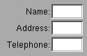

Copyright ª1996 by NeXT Software, Inc. All Rights Reserved.
NSForm
Inherits From: NSMatrix : NSControl : NSView : NSResponder : NSObject
Conforms To: NSCoding (NSResponder)
NSObject (NSObject)
Declared In: AppKit/NSForm.h
Class Description
An NSForm is a vertical NSMatrix of NSFormCells. Here's an example:

In NSForm's methods, each NSFormCell is called an “entry” (or, sometimes, a “cell” or “item”). The left part of each entry is called the “title,” and the right part is called the “text.” Methods that refer to individual entries use an one-dimensional “index”; the indexing system starts at the top of the top of form, with zero.
Any entry in the form can be “selected.” When an entry is selected, its text area responds to the user's keystrokes. You can select an entry using the selectTextAtIndex: method, or you can let the user select an entry by clicking it with the mouse. Once an entry is selected, the user can select the next entry by pressing Tab, or select the previous entry by pressing Shift-Tab.
To initiate the action of a selected entry, the user presses Return or Enter. In response, the entry sends an action message to its target. If the entry has no target, the NSForm sends an action message to its target.
NSForm includes a methods to change the appearance of entries (the set... methods). These methods affect every entry in the form. To change the appearance of an individual entry, you need to single it out, using cellAtIndex:, and then send it messages appropriate to an NSFormCell.
For more information, see the class specifications for NSFormCell and NSMatrix.
Method Types
Adding and removing entries - addEntry:
- insertEntry:atIndex:
- removeEntryAtIndex:
Changing the appearance of all the entries
- setBezeled:
- setBordered:
- setEntryWidth:
- setInterlineSpacing:
- setTitleAlignment:
- setTextAlignment:
- setTitleFont:
- setTextFont:
Asking and changing the cell class + cellClass
+ setCellClass:
Getting cells and indices - indexOfCellWithTag:
- indexOfSelectedItem
- cellAtIndex:
Displaying a cell - drawCellAtIndex:
Editing text - selectTextAtIndex:
Instance Methods
addEntry:
- (NSFormCell *)addEntry:(NSString *)title
Adds a new entry to the end of the form, and gives it the title title. The new entry has no tag, target, or action, but is enabled and editable.
See also: - insertEntryAtIndex:,
- setTag:, - setTarget:, - setAction:, - setEnabled: (all from NSActionCell)
- setEditable: (NSCell)
cellAtIndex:
- (id)cellAtIndex:(int)entryIndex
Returns the entry specified by entryIndex.
See also: - indexOfCellWithTag:, - indexOfSelectedItem
drawCellAtIndex:
- (void)drawCellAtIndex:(int)entryIndex
Displays the entry specified by entryIndex. Since this method is called automatically whenever a cell needs drawing, you will never need to invoke it explicitly. It is only included in the API so that you can override it if you subclass NSFormCell.
See also: - indexOfCellWithTag:, - indexOfSelectedItem
indexOfCellWithTag:
- (int)indexOfCellWithTag:(int)tag
Returns the index of the entry whose tag is tag.
See also: - tag (NSCell)
indexOfSelectedItem
- (int)indexOfSelectedItem
Returns the index of the selected entry. If no entry is selected, indexOfSelectedItem returns -1.
insertEntry:atIndex:
- (NSFormCell *)insertEntry:(NSString *)title atIndex:(int)entryIndex
Inserts an entry with the title title at the position in the form specified by entryIndex. The new entry has no tag, target, or action, and, as explained in the class description, it won't appear on the screen automatically.
Returns the newly inserted NSFormCell.
See also: - addEntry:, - removeEntryAtIndex:
removeEntryAtIndex:
- (void)removeEntryAtIndex:(int)entryIndex
If entryIndex is a valid position in the form, removes the entry there and frees it.
selectTextAtIndex:
- (void)selectTextAtIndex:(int)entryIndex
If entryIndex is a valid position in the Form, selects the entry at that position.
setBezeled:
- (void)setBezeled:(BOOL)flag
If flag is YES, sets all the entries in the form to show a bezel around their editable text; if flag is NO, sets all the entries to show no bezel.
See also: - isBezeled (Cell), - setBordered:
setBordered:
- (void)setBordered:(BOOL)flag
flag determines whether the entries in the form are set to display a border—that is, a thin line—around their editable text fields. An entry can have a border or a bezel, but not both.
See also: - isBordered (Cell), - setBezeled:
setEntryWidth:
- (void)setEntryWidth:(float)width
Sets the width (in pixels) of all the entries in the form. This width includes both the title and the text field.
setInterlineSpacing:
- (void)setInterlineSpacing:(float)spacing
Sets the number of pixels between entries in the form to spacing.
setTextAlignment:
- (void)setTextAlignment:(int)alignment
Sets the alignment for all of the form's editable text. alignment can be one of three constants: NSRightTextAlignment, NSCenterTextAlignment, or NSLeftTextAlignment (the default).
See also: - setTitleAlignment:
setTextFont:
- (void)setTextFont:(NSFont *)font
Sets the font for all of the form's editable text fields.
See also: - setTitleFont:
setTitleAlignment:
- (void)setTitleAlignment:(NSTextAlignment)alignment
Sets the alignment for all of the entry titles. alignment can be one of three constants: NSRightTextAlignment, NSCenterTextAlignment, or the default, NSLeftTextAlignment.
See also: - setTextAlignment:
setTitleFont:
- (void)setTitleFont:(NSFont *)font
Sets the font for all of the entry titles.
See also: - setTextFont: